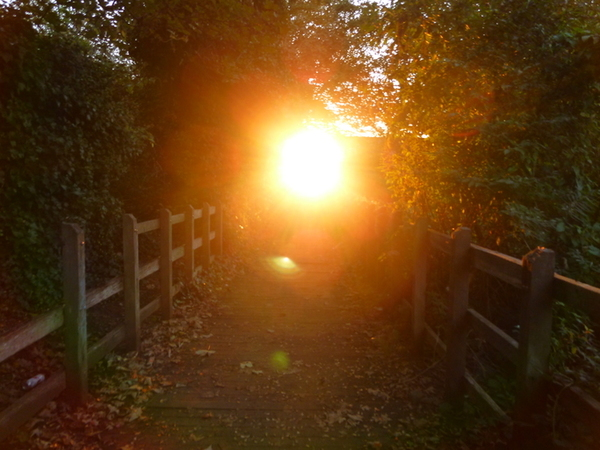
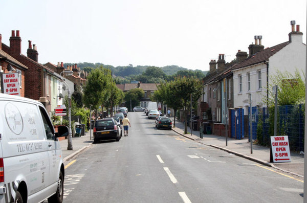
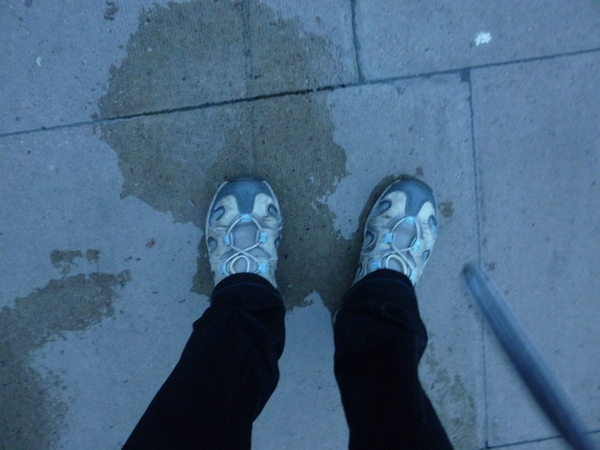

в поисках хаты
Как оказалось, проблема хаты не давала мне покоя.
По приезде в Лондон я собиралась плотно засесть с компом и погрузиться в дело. Это верный способ спастись от уныния, скукоты, падения в собственных глазах, предательского иждивенческого чувства, беспрестанной еды, шатания не дай Бог по магазам, потери вкуса к жизни и — главное — отчуждения от общих с СергейАнатольичем программистских тем.
Но на месте оказалось столько всякой ерунды, что дело пришлось отодвинуть. Надо было зарегистрироваться в полиции, завести СергейАнатольичу банковскую карточку, купить мне симку и подключиться к местному оператору — не так уж много, но всё это перемежалось распечатыванием каких-то документов, ксереньем паспортов, подачей заявлений на присыл какого-то дурацкого письма (которое почему-то шло FedEx’ом из Дублина), поиском полицейского участка, обнаружением, что он уже закрылся, повторным походом участок и назначением встречи через неделю, потом такой же беготнёй с назначением встречи в банке и т.д.
Лондонская полиция удивительная: когда мы наконец пришли в участок, всё было быстро, просто, исчёрпывающе и с весёлыми шутками. В общем, полиция что надо.
С телефоном мне повезло: в офисе, в который меня занесло, попался классный мужик Suleiman. Он мог бы просто продать мне симку. Но вместо этого он долго допытывался, “залочен” ли мой телефон (то есть привязан ли он к симке одного конкретного оператора). Я человек тёмный, в телефонных вопросах не шарю. Тогда он пошёл со мной в соседний магаз и попросил их вставить другую симку, и только убедившись, что телефон не залочен, продал мне ихнюю. Ещё и выдал специальную карточку, чтоб легко было класть деньги на телефон.
В общем, из-за всякой тягомотины мы не успели сделать карточку за первых пару дней, а тем временем зарплатный день прошёл, и мы остались без бабла до следующего месяца. СергейАнатольич даже слегка расстроился из-за всей этой тягомотины. Помню его заявление “ну чё, на крайняк через месяц свалим назад”. Это он конечно через край ляпнул, ситуация более чем нормальная, просто он тягомотину недолюбливает.
* * *
Потом я поняла, что от дела меня отделяет ещё одна мелочь — хата. Было ясно, что вся эта эпопея предстоит, и что предстоит она в общем-то мне (СергейАнатольич во-первых работает, а во-вторых недолюбливает упомянутую тягомотину). Я же к тягомотине отношусь вполне спокойно, если поблизости есть кто-то, кто её недолюбливает.
Вообще, гугол на два дня предоставляет хатного агента (который будет предлагать варианты и водить по хатам). Но я — суровый поборник самообслуживания. Мне приятнее долго ковыряться в куче мусора, чем согласиться на то, что предлагают. (Даже если моё мусорное окажется хуже.)
И вот я приступила к изучению хатного рынка (то бишь фотографий хат в интернете). Дело это крайне простое: берёшь первый попавшийся хатный сайт, задаешь параметры, а потом смотришь все подряд хаты из вывалившегося списка. У половины из них нет фотографий — такие отваливаются сразу. Среди оставшихся довольно много общаг (кстати, красивых). Дальше проверяется минимальная комплектация: кухня, ванная с ванной, туалет, комната, где хватит места для кровати и компов. Потом отсев по фоторгафиям: стены отвратительного цвета, до окна не долезть, какие-то хламоватого вида туалетные столики и прочее. Если с виду отвращения не вызывает, то следует проверка маршрута до работы (к счастью, с гугло-и-прочими-картами это минутное дело). Если маршрут не-рельсовый, с пересадками или больше часа — долой. Если всё хорошо — оставить висеть в отдельной вкадке.
По мере поиска моё недоверие к предоставляемому агенту укреплялось. Невозможно описать другому человеку, чего именно ты хочешь. Например, “квадратность”. Штука в том, что моё внутренне чувство квадратности слабо связано с физической квадратностью. Или другие вещи, которые проясняются для меня при одном взгляде на фотки, а агент бы их даже слушать не стал. Наконец, с агентом возникает неприятное чувство, что ты должен согласиться на один из предложенных вариантов. А это как-то ... противно. Да и вообще, бывают, знаете-ли, такие хаты: всё в них есть, и место хорошее, но только как посмотришь на неё — с души воротит. То-ли от бетонных рюш на доме, то-ли от безнадёжно-сонной улицы, то-ли от викторианской спальни — чувствуешь, что нет нам места в такой хате, не встрянут там наши компы.
Вы там думаете, что я заелась со своими придирками к викторианскому стилю. И я периодически ловила себя на этой мысли. “Эээ, погоди”, — говорила я себе — “нормальная хата, привыкнуть можно”. Потом полдня ходила и привыкала. А потом чувствовала, что нет, лучше уж любую холупу, только не это. Такой я человек привередливый.
* * *
Я хотела снять довольно бедную хату. Я не особый любитель новизны: мне в ней неуютно, как-то не размышляется. Да и хочется почувствовать, как тут живут простые люди.
Проблема в том, что бедность у них тут другая, чем у нас. У нас бедная хата — это панельная хрущовка с картонными стенами, вонючим подъездом, узкими коридорами, тесными комнатухами и напрочь заплесневелым туалетом-коробкой. У них не так. У них бедная хата — это стеклянная входная дверь без порога с ручкой от кухонного шкафа. Открываешь её — и слева кровать, а справа плита. Никакого коридора. Так называемый ground floor.
Довольно быстро я поняла, что чужеродная бедность — штука такая же зверская, как чужие грязные трусы. Ей-богу, мне даже нравятся грязные тёмные подъезды и заплесневелый туалет с подгнившим ковриком. Но шагнуть прямо с улицы в хату, в комнату с кроватью, без порога, без лестницы, без хоть мало-мальского коридора, без тяжёлой входной двери — неее, не могу. Это как принимать душ в переходе и смотреть, как пена стекает в водосточные решётки.
Поэтому вторым порывом после “снять бедную хату” было “снять максимально привычную хату”. То есть обычную квартиру в большом доме. С грязным подъездом и — недостижимый идеал — замусоренным балконом.
Но штука в чём: не строят они тут больших прямоугольных домов. Точнее, строят, но это для буржуев. Настоящий Лондон весь маленький. Кривые узкие улицы, вплотную застроенные игрушечными домами. На первом этаже — забегаловки и магазины. На втором — хата, и ещё одна хата на чердаке. Обычно дома примыкают друг к другу, то есть во двор не попадёшь. Да и нет у них никаких дворов, просто тянется на всю улицу вереница входных дверей.
Вообще, не. Большие дома не-для-буржуев всё-таки бывают. Я видела их из электрички, и даже по объявлениям в интернете. Есть целый квартал, похожий на Жодино.
И всё же, поиск привычной, нехарактерной для Лондона хаты кажется мне жалким уходом от реальности. Да и СергейАнатольич, сдаётся мне, не такой уж поборник бетонных коробок и грязных подъездов (хотя он не привередливый).
* * *
По Лондонским меркам мы довольно богатые. Выше среднего. Зажиточные белорусы, скажем так. В общем, на хату мы как-то планировали тыщу фунтов. Но зачем же сразу тыщу? Попадаются хаты и за пятьсот. :)
Природная жадность и нелюбовь к впритыку привели меня к фильтру в восемьсот. И этого много! :D
* * *
Между тем я уже разослала несколько ответов на объявления. На хатных сайтах есть два вида обратной связи: почта и телефон. На почту они отвечают долго (по крайней мере те агентства, с которыми я возилась). Я уже успела найти прекрасно выглядящую хату в новой многоэтажке, и решила, что пора начинать переговоры.
Я не люблю говорить по телефону, кроме тех случаев, когда на другом конце мне явно рады. Но деловые звонки — дело другое. Не парят абсолютно. (Недаром дядька Илья учил нас, как хорошо поставленным говорить в трубку “Алло” :D) В общем, нет у меня никаких проблем поговорить по-деловому, плевать что половину нужных слов я не помню, а на другом конце — человек с сильным (в отличие от меня, разумеется) акцентом. ;D
Но вот что подрывает — так это автоответчики. Сжав лицо в кулак, включив авторитетный голос и надев мысленный пиджак, слушаешь гудки. И в это момент истории, в миг максимального накала в трубке лопается пузырь и писклявый голос автоответчика начинает нести какую-то ахинею. Буээээ… Трясущейся, одряхлевшей рукой давишь на красную кнопку.
Короче, дозвониться до агентов не всегда просто. Часто линия забита, а автоответчик перенаправляет не туда, куда ты хотел. Но это всё ерунда, к этому быстро привыкаешь. А вот что не ерунда — так это чудовищные тонны денег, списывающиеся с телефона (месячный баланс проговорить за день — раз плюнуть). Это не так уж много в масштабах Лондона: разок сходить в магаз или съездить пару раз на метро. Но всё равно возмутительно.
Как ни странно, с агентами-мужиками мне тяжелее говорить, чем с тётями. В смысле, что мы хуже друг друга понимаем. Но в целом особых проблем нет: самым сложным было надиктовать в телефон нашу фамилию.
* * *
Я грязно пользовалась стигмой “Гугол”. Они всё время спрашивают про работу, про всякие банковские счета за три месяца (а СергейАнатольич только недавно отмучился с открытием счёта, так что нет у нас этой ерунды). “Гугол” действет на всех как волшебное слово. Это противно, но когда говоришь им “programmer”, они обычно недовольно переспрашивают “programmer of what”? На самом деле, мне противно, что я перешла дорогу другим людям (которых я видела) только из-за слова “Гугол”. Как-то это низко.
Ну ладно, пора съезжать с этой мрачной темы.
* * *
Первые звонки были комом. Когда предлагают посмотреть на хату в тот же день, попытка перенести на другой день почти равна отказу: скорее всего за этот день её посмотрят человек десять, три из которых положат глаз, а у одного окажутся готовы документы. Ждёшь потом обещанного звонка, перезваниваешь — а там “I’m afraid it’s gone” [а, это опять ты, а я тебя уже выкинул из головы — прим. автора]. Очень скоро я изменила порядок сортировки с “по возрастанию цены” на “по свежести объявы”.
Кроме того, я убрала фильтр “не в Урюпинске” (то есть поближе к центру Лондона). Если из Урюпинска идёт получасовая электричка, а из центра — получасовое метро, то неизвестно, что лучше (но по-моему — электричка).
Со свежими хатами пошло повеселее. Наконец, когда после ряда утомительных автоответчиков и переключателей вместо немедленных от-ворот-поворотов и длинных списков заведомонеудовлетворяемых требований телефонная девушка предложила “today at 5:30” [а ты что думала, мы месяц ждать будем? — прим.автора], я с некоторым удивлением ответила “ok” [что ж, так тому и быть — прим.автора].
На волне успеха я в присмотрела ещё одну хату — в Южном Кройдоне. Договорилась заехать туда на следующий день (и может даже вместе с СергейАнатольичем).
* * *
Вообще, заезд я поставила больше для пробы: было уже ясно, что на каждом новом этапе хатной эпопеи ждёт новая неведомая ерунда. Но к моменту, когда заезд-таки организовался, у меня было (довольно неприятное, кстати) чувство, что я серьёзно связана с этой хатой — столько было проделано дурацких переговоров и прочего. По приезде на место я ожидала увидеть ту самую девушку из телефона (размахивающую флажками и прочими опознавательными знаками).
Приехала я на метро. Поездки на метро для меня — редкость. Это так дорого, что нельзя упускать ни мгновения. Я захожу в вагон метро и окидываю каждого попутчика хитрым, бывалым взглядом (мол, мы-то видели жизнь и понимаем, каково это — ездить в метро).
С царской небрежностью скрестив ноги в проходе, я несусь сквозь пространство и время. В голове звучат отголоски Korn’овской “Falling through time”:
Is there ever any wonder
Why we look to the sky
Search in space
Asking why ?..
Люблю я поезда, особенно когда ездить не них не то что не надо, а слека нельзя.
Два-три раза за поездку я с кем-нибудь заговариваю, а иногда кто-нибудь заговаривает со мной.
* * *
Выйдя из метро, я сориентировалась по карте. За моими плечами — долгие годы шатаний, бессонные дни, проведённые в пути, поэтому сориентировалась я быстро и точно. В голове молниеносно вспыхнул маршрут из точки А в точку Б.
Я стремительно покрывала мили, и вот уже киоск у метро остался за спиной. То и дело я сверялась картой, прямо на ходу, не сбавляя темпа — прирождённое чутьё позволяет мне манипулировать картой, как тарелкой еды, вертеть её так и этак, неукротимо приближаясь к пункту Б.
Проблема только в том, что паутина неподписанных кривых улиц длиной в полтора дома довольно плохо отражена на карте. Моя улица была где-то совсем рядом, за три двора — но каких именно, и как туда пробраться через сеть заборов — неясно. Местные жители, кажется, ни жисть не слыхивали названия улиц, на которых они живут. Последовательно применяя технику “бессвязного разбредания”, я наконец упёрлась в табличку с названием моей улицы (улица имеет форму буквы “П” шириной в несколько домов).
Кстати, гуглокарты такие вот адреса лоцируют неточно. Кроме того, стрелка в них часто показывает абы-куда. Так что если кто думает, что лопата с навигацией — панацея, то не. :D
Найдя улицу, я ещё долго искала дом (вернее, подъезд, или скорее даже входную дверь). У меня был точный адрес, но в Лондоне это не всегда помогает. Наконец какая-то добрая женщина указала мне на табличку с нужным номером (к этому моменту я давно изучила все таблички на этом доме и была уверена, что нужной среди них нет).
* * *
Я топталась и топталась у входа, расхаживала, принимала задумчивые позы и снова топталась. К подобным ожиданиям не привыкать — они занимают половину жизни (а оставшуюся половину — угорелая спешка и горькие угрызения совести, что я опаздываю).
Ну ладно, не так всё на самом деле. :)
Но подолгу топтаться на одном месте я хорошо умею: эта привычка у меня ещё со школы, когда мы с Мариной каждый день ждали друг друга на обычном месте. Хорошо помню надежду, растущую по мере приближения к обычному месту и постепенно гаснущую с уходящими в небытиё минутами. Помню холодное, беспросветное отчаяние, когда проходит пятнадцать, потом двадцать минут, наконец полчаса, и понимаешь — не будет никакой Марины, только скалящиеся стены 87-й, электрический свет в лакированных партах и одиночество. Хуже того, раз Марина не пришла — значит заболела, и завтра её тоже не будет. Да что там говорить, все ходили в этот ад.
В общем, неявка какого-то там агента и рядом не стояла с перспективой одной тащиться в школу, но неприятно как-то, что первый опыт неудачный. Мало ли, может тут две похожих улицы с одинаковыми названиями и номерами домов. Или я неправильно распознала адрес по телефону. В общем, пару раз я пыталась звонить на номер, специально взятый на случай, если не смогу найти объект — кха... алло! Алло! Я на объекте... Повторяю: я на объекте... — там было занято. Я представляла себе, как агент едет в метро, терзаясь угрызениями совести.
В это время, терзаясь угрызениями совести (но не показывая виду) к соседнему дому подкатила маленькая, ладная машинка, разрисованная рекламой хатного агентства (и вроде даже того самого). Оттуда выскочил любезный агент и принялся показывать соседнюю хату какому-то по случаю набежавшему мужику. Я рассматривала их издалека, радуясь, что моя хата — не та (та выглядела довольно уныло). В это время подошла ещё какая-то девушка, и тоже в ту хату. Гадкие подозрения закрались мне в голову.
Так я не одна? Ну логично, предательское агентство пригласило сразу трёх человек... да ещё и хата оказалась в соседнем, более жалком, доме. Решительной походкой я направилась прямо на агента (пригвоздив его взглядом, чтоб не ускользнул). На самом деле, мне уже было наплевать — вторая хата выглядела ужасно — но чтоб не напрасно ехать, я дождалась своей очереди и зашла внутрь.
О-хо-хо, братцы! Какая же она была отвратная. С облегчением в этом убедившись (свалилось с души поганое чувство, что я за эту хату в ответе), я весело распрощалась и радостно зашагала прочь. Мне ещё предстояло встретить СергейАнатольича на виктории.
Неожиданно короткая дорога к метро оказалась такой:

* * *
Отвратительность увиденной хаты наводила на мысли. СергейАнатоьича — что с хатами тут сплошное надувалово и оббирательство, меня — что фоткать агенты умеют. В среднем надо уменьшать размер хаты вдвое против фотки (по линейным измерениям). И то, случаи, когда фоткали, вися на невидимых крыльях в углу под потолком — не в счёт. В таких случаях надо уменьшать раз в десять.
Кому интересно — сфоткайте свою хату из угла, и порадуйтесь, какая она, оказывается, большая :D
Но если быть внимательным, то на многих фотках попадаются артефакты. Это мелкие, замечательные детали, влезшие в кадр по недосмотру агента. Где угол шкафа, где спинка стула, где ещё какая ерунда. Сопоставляешь потом взаимное расположение таких артефактов — и истинный размер комнаты начинает проясняться. Особо честные люди вообще выкладывают план.
В общем, со скидкой на тесноту мой отбор хат стал ещё строже. Как ни странно, хата в Кройдоне (в которую вечером мы должны были ехать) проходила — с виду она была невменяемо огромной.
С утра я ещё поковыряла свежие объявы, присмотрела несколько штук, но все они были чем-то хуже кройдоновской хаты, и звонить не хотелось. Неожиданно я нашла объявление про хату, по виду такую же, как кройдоновская (только стены белые вместо желтоватых и стол по-друому стоит). Да ещё и адрес дома совпадает. Варианта два: или та же хата, или там рядом несколько одинаковых.
Ну я для смеху позвонила, поговорила с мужиком-индусом и назначила позыр этой хаты на 4:00 (в этот же день). Получается, в 4:00 вторая хата, а в 5:30 первая. Сначала думали, что СергейАнатоьич приедет только к 5:30, но потом я подбила его ехать вместе к 4-м.
* * *
В общем, добирались мы туда добирались, но наконец добрались. Когда идёшь по улице, зная, что через пару кварталов заветная хата, всё время мысленно оцениваешь попадающиеся дома. Мол, этот ничего такой — не в нём ли?.. Не.. А вон те дома — отвратные, хоть бы не в них..
Так мы продвигались по улице, она понемногу глушела, дома становились всё ниже и холуповатее. Наконец номера домов пошли уже больше, чем надо — пропустили, стало быть. Вернувшись немного назад, опасливо покосились на обычный чердак-над-магазом, подозрительно затаившийся между слишком маленькими и слишком большими номерами. После небольшого научного исследования на доме обнаружился номер — ага, наш. :)
В такие моменты понимаешь, что поторопился с осуждением маленьких домов. Ну маленький, да. Ну над магазом. Ну и что? Вполне себе нормальный очень даже дом. Вон какая дверь неплохая.:D
Дверь, кстати, и правда была хорошая: не с облезшей белой краской, как тут модно, а деревянная. Ну или выглядела она деревянно. В общем, дверь сумела произвести впечатление.
Она была закрыта, и я позвонила мужику-индусу (кашмирцу, как потом оказалось, и зовут его Mazhar Khan). Оказалось, что он ждал нас внутри (там же была ещё одна девушка).
Хата наша на втором этаже (точнее, у них это называется первым — тоже мне “нумерация с нуля”). Лестница на второй этаж очень узкая, с квадратными ступенями, обитыми каким-то классным ковром. Думаю, с этой лестицы удобно спускать негодных — и эффект есть, и они не поранятся. Ещё, думаю, на неё неплохо заходить с тяжёлыми сумками — должно возникать чувство подвига.
Хата — две комнаты, выходящие на две противоположные стороны света. Соединены узким коридором, оббитым тем же ковром. Комнаты находятся на слегка разных уровнях, поэтому посреди коридора есть ещё одна лестница в пару ступеней. Комната, выходящая на улицу — типа “зал”, объединённый с кухней (большой-таки). Другая, выходящая во двор — спальня (маленькая и оббитая пресловутым ковром). Посреди коридора есть ещё дверь в ванную (тоже с окном), да и в самом коридоре, если кому-то мало, тоже есть окно.
Мебели в хате почти не было — ещё бы, её туда неоткуда засунуть :D. Пролез только новый матрас, да ещё мелкий стол и оставшийся с незапямятных времён кожаный диван с вусмерть продавленным сиденьем.
Видимо, когда я рассматриваю новые хаты (и, возможно, не только хаты) на лице моём написано жуткое выражение загнанности и отчаяния, потому что кашмирец удивился, когда мы сказали, что хата норм. Потом ещё долго обсуждали с ним, какие документы нужны и сколько они готовы ждать очередного дурацкого письма из Дублина. С этим кашмирцем интересно: говоришь ему что-то, думаешь, что договорился — а потом случайно из разговора понимаешь, что он то-ли не понял, то-ли не хотел спорить, но ни о чём ты с ним не договорился. :D При этом он почему-то хорошо к нам относился, и главное мы из него случайно выбили: что если на следующий день заехать к нему в офис и выдать небольшой залог, то он забьёт хату для нас и подождёт документов.
* * *
Вообще, от всего нового меня лихорадит и пробивает лёгкое отвращение. Мне начинает казаться, что оно лезет мне в голову, заполняет всё пространство и не даёт дышать. Новое может зацепить, даже всерьёз понравится — но неизбежно наступит момент, когда мне захочется закрыть глаза, заткнуть уши, заорать, и оказаться где-нибудь, где этого нет. После такой отдушины или новое становится старым, или уходит.
Так вот. Не люблю я новые впечатления. Люблю старые. И это ко всем относится: к людям, местам, мыслям, еде и т.д.
Но вещи, хаты, даже места — мелочь по сравнению с людьми. Их оказалось даже легче пережить, чем можно было бы думать, если б я об этом думала. Больше всего меня парят административные дела, а не обстановка. От них на душе пусто.
* * *
Кройдон простой. В центре Лондона душно, в смысле домов душно: нет тут никакого простора, сплошная кривизна с нагромождениями стекла и бетона. Красота в этом есть, но от неё быстро устаёшь — особенно от неестественности.
В Кройдоне дышится свободнее, и дороги там куда-то ведут. Есть чувство пути. Должно быть понятно из этой фотки (фотка не моя, из интернета, но правду отражает):

Добираться от работы СергейАнатольича 45 минут: 5 минут идти до виктории, 25 минут ехать на электричке (с тремя остановками, правда, последнюю остановку электричка едет вяло и делает стоянку в кустах) и 10 минут от электрички до дома. Ну и пять минут внаброс для внимательных. :D
Наша станция — сандерстед — очень непохожа на другие станции. Во-первых, там нет турникетных воротец. Просто стоит автомат — хошь, приложи карточку, не хошь — едь так. Во-вторых, там стоит привратницкий дом, в котором за копейки можно выбрать почитать книжку, пока ждёшь. И тётя-привратница там хорошая.
* * *
Короче, ещё неделя возни, договоров с Мазхаром, обменников бабла, чтения документов, мотания туда-сюда в офис и хату — и всё. Подписали контракт на год за 825 фунтов в месяц без учёта коммуналки, если кому-то это интересно.
Я возвращалась из агентства, и наступила осень.

* * *
UPD: для всех, кто думает, что этот пост унылый! Не вздумайте так думать. Оптимизм — не мой конёк. Суровый кафкианский стиль — вот что мне по душе. :D
Никаких проблем с баблом у нас нет и не было, и вообще никаких проблем!
comments powered by Disqus